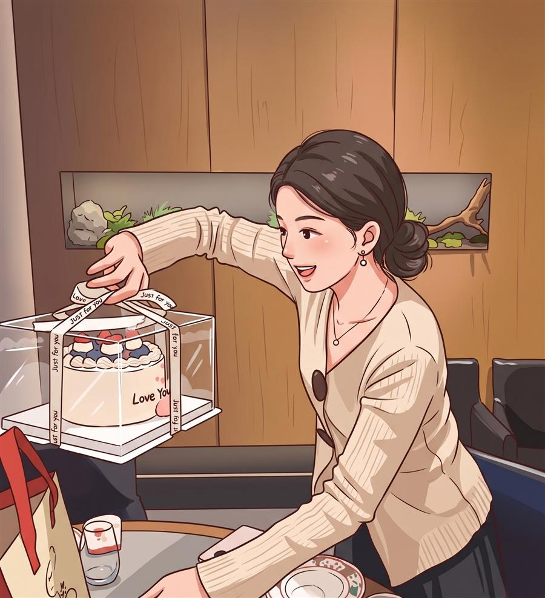
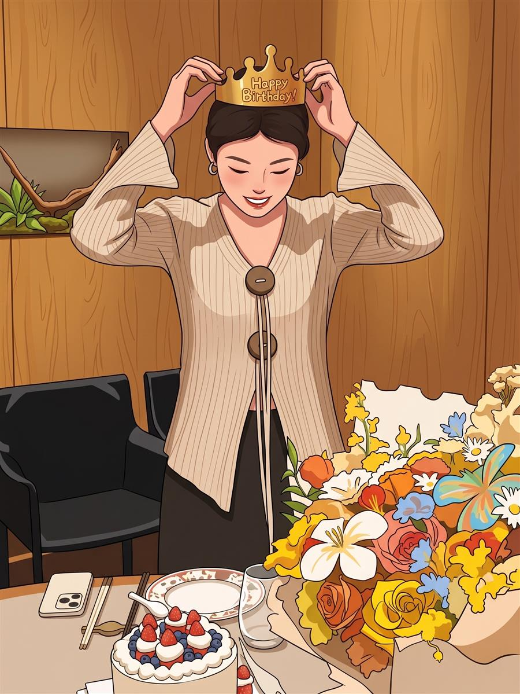

毕业快乐
希望毕业之后，我们几人可以一起去一个美丽的地方，风很轻，光也很柔。慢慢逛，慢慢聊，把这一段变成以后想起来会笑的回忆。
Soft Wishes
希望毕业之后，我们几人可以一起去一个美丽的地方，风很轻，光也很柔。慢慢逛，慢慢聊，把这一段变成以后想起来会笑的回忆。
希望入职以后，一切都比想象中顺一点。遇到好相处的同事，也遇到新的朋友、新的陪伴，在新的节奏里慢慢找到让自己舒服的位置。
也许分别只是把重逢变得更有意义，但熟悉的人一直会在，你偶尔想起的时候，会知道这里一直有人很认真地惦记你。
Old Days, Gentle Light

后来再想起那天，其实不太记得每句话了，只记得大家坐在一起，气氛很好，笑得也很轻松。

出去走走的时候，时间好像会慢一点。风吹过来，很多烦心事也就被放远了一点。
Birthday Evening


A little secret